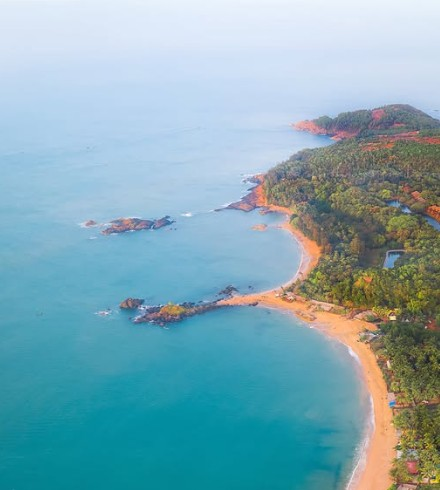
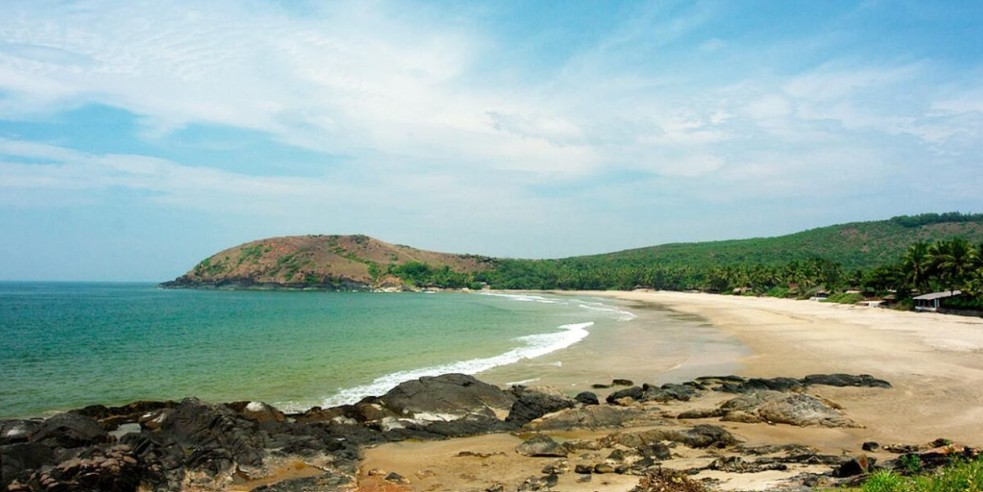
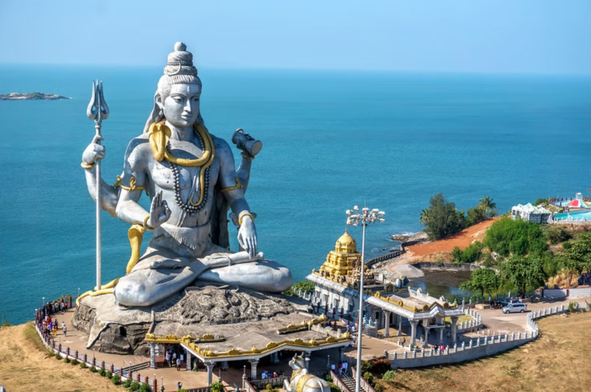

Gokarna is a peaceful coastal town in Karnataka, India, known for its beautiful beaches, temples, and relaxed atmosphere. It is famous for the Mahabaleshwar Temple and scenic beaches like Om Beach and Kudle Beach. Gokarna is a perfect destination for both spiritual travelers and beach lovers.

Famous beach shaped like the sacred symbol "Om".

A peaceful beach known for sunsets and relaxing vibes.

An ancient temple dedicated to Lord Shiva and a spiritual center.
Best time to visit: October to March.
Enjoy beach trekking, sunset views, and local seafood for the best experience.